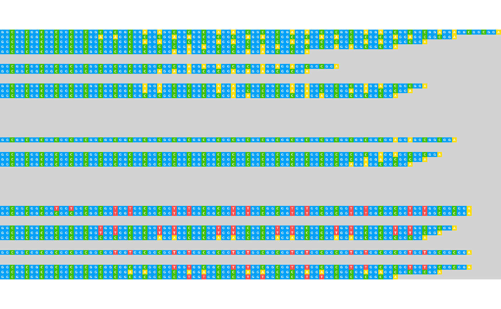

visualize_many_sequences() is an alias for visualise_many_sequences() - see aliases.
This function takes a vector of DNA/RNA sequences (each sequence can be
any length and they can be different lengths), and plots each sequence
as base-coloured squares along a single line. Setting filename allows direct
export of a png image with the correct dimensions to make every base a perfect
square. Empty strings ("") within the vector can be utilised as blank spacing
lines. Colours and pixels per square when exported are configurable.
Usage
visualise_many_sequences(
sequences_vector,
sequence_colours = sequence_colour_palettes$ggplot_style,
background_colour = "white",
margin = 0.5,
sequence_text_colour = "black",
sequence_text_size = 16,
index_annotation_lines = c(1),
index_annotation_colour = "darkred",
index_annotation_size = 12.5,
index_annotation_interval = 15,
index_annotations_above = TRUE,
index_annotation_vertical_position = 1/3,
index_annotation_full_line = TRUE,
outline_colour = "black",
outline_linewidth = 3,
outline_join = "mitre",
return = TRUE,
filename = NA,
force_raster = FALSE,
render_device = ragg::agg_png,
pixels_per_base = 100,
...
)Arguments
- sequences_vector
character vector. The sequences to visualise, often created from a dataframe viaextract_and_sort_sequences(). E.g.c("GGCGGC", "", "AGCTAGCTA").- sequence_colours
character vector, length 4. A vector indicating which colours should be used for each base. In order:c(A_colour, C_colour, G_colour, T/U_colour).
Defaults to red, green, blue, purple in the default shades produced by ggplot with 4 colours, i.e.c("#F8766D", "#7CAE00", "#00BFC4", "#C77CFF"), accessed viasequence_colour_palettes$ggplot_style.- background_colour
character. The colour the background should be drawn (defaults to white).- margin
numeric. The size of the margin relative to the size of each base square. Defaults to0.5(half the side length of each base square).
Note that index annotations can require a minimum margin size at the top or bottom if present above the first/below the last row. This is handled automatically but can mean the top/bottom margin is sometimes larger than themarginsetting.
Very small margins (\(\le\)0.25) may cause thick outlines to be cut off at the edges of the plot. Recommended to either use a wider margin or a smalleroutline_linewidth.- sequence_text_colour
character. The colour of the text within the bases (e.g. colour of "A" letter within boxes representing adenosine bases). Defaults to black.- sequence_text_size
numeric. The size of the text within the bases (e.g. size of "A" letter within boxes representing adenosine bases). Defaults to16. Set to0to hide sequence text (show box colours only).- index_annotation_lines
integer vector. The lines (i.e. elements ofsequences_vector) that should have their base incides annotated. 1-indexed e.g.c(1, 10)would annotate the first and tenth elements ofsequences_vector.
Extra lines are inserted above or below (depending onindex_annotations_above) the selected lines - note that the line numbers come fromsequences_vector, so are unaffected by these insertions.
Setting toNAdisables index annotations (and prevents adding additional blank lines). Defaults toc(1)i.e. first sequence is annotated.- index_annotation_colour
character. The colour of the little numbers underneath indicating base index (e.g. colour of "15" label under the 15th base). Defaults to dark red.- index_annotation_size
numeric. The size of the little number underneath indicating base index (e.g. size of "15" label under the 15th base). Defaults to12.5.
Setting to0disables index annotations (and prevents adding additional blank lines).- index_annotation_interval
integer. The frequency at which numbers should be placed underneath indicating base index, starting counting from the leftmost base. Defaults to15(every 15 bases along each row).
Setting to0disables index annotations (and prevents adding additional blank lines).- index_annotations_above
logical. Whether index annotations should go above (TRUE, default) or below (FALSE) each line of sequence.- index_annotation_vertical_position
numeric. How far annotation numbers should be rendered above (ifindex_annotations_above = TRUE) or below (ifindex_annotations_above = FALSE) each base. Defaults to1/3.
Not recommended to change at all. Strongly discouraged to set below 0 or above 1.- index_annotation_full_line
logical. Whether index annotations should continue to the end of the longest sequence (TRUE, default) or should only continue as far as each selected line does (FALSE).- outline_colour
character. The colour of the box outlines. Defaults to black.- outline_linewidth
numeric. The linewidth of the box outlines. Defaults to3. Set to0to disable box outlines.- outline_join
character. One of"mitre","round", or"bevel"specifying how outlines should be joined at the corners of boxes. Defaults to"mitre". It would be unusual to need to change this.- return
logical. Boolean specifying whether this function should return the ggplot object, otherwise it will returninvisible(NULL). Defaults toTRUE.- filename
character. Filename to which output should be saved. If set toNA(default), no file will be saved. Recommended to end with".png", but can change if render device is changed.- force_raster
logical. Boolean specifying whetherggplot2::geom_raster()should be used even if it will remove text and outlines. Defaults toFALSE.
To make the detailed plots with box outlines, sequence text, and index annotations,ggplot2::geom_tile()is used. However,geom_tileis unusuably slow for huge datasets, so there is an option to usegeom_rasterinstead.geom_rasterdoes not support box outlines, sequence text, or index annotations, but is much faster if only the colours are wanted.geom_rasteris automatically used if it will not change the plot (i.e. if all extraneous elements are already off), but can be forced using this argument.- render_device
function/character. Device to use when rendering. Seeggplot2::ggsave()documentation for options. Defaults toragg::agg_png. Can be set toNULLto infer from file extension, but results may vary between systems.- pixels_per_base
integer. How large each box should be in pixels, if file output is turned on via settingfilename. Corresponds to dpi of the exported image. Defaults to100.
Large values (e.g. 100) are required to render small text properly. Small values (e.g. 20) will work when sequence/annotation text is off, and very small values (e.g. 10) will work when sequence/annotation text and outlines are all off.- ...
Used to recognise aliases e.g. American spellings or common misspellings - see aliases. If any American spellings do not work, please make a bug report at https://github.com/ejade42/ggDNAvis/issues.
Value
A ggplot object containing the full visualisation, or invisible(NULL) if return = FALSE. It is often more useful to use filename = "myfilename.png", because then the visualisation is exported at the correct aspect ratio.
Examples
# \donttest{
## Create sequences vector
sequences <- extract_and_sort_sequences(example_many_sequences)
## Visualise example_many_sequences with all defaults
## This looks ugly because it isn't at the right scale/aspect ratio
visualise_many_sequences(sequences)
## Export with all defaults rather than returning
visualise_many_sequences(
sequences,
filename = "example_vms_01.png",
return = FALSE
)
## View exported image
image <- png::readPNG("example_vms_01.png")
unlink("example_vms_01.png")
grid::grid.newpage()
grid::grid.raster(image)
## Export while customising appearance
visualise_many_sequences(
sequences,
filename = "example_vms_02.png",
return = FALSE,
sequence_colours = sequence_colour_palettes$bright_pale,
sequence_text_colour = "white",
index_annotation_interval = 3,
index_annotation_lines = 1:51,
index_annotation_full_line = FALSE,
background_colour = "lightgrey",
outline_linewidth = 0,
margin = 0
)
## View exported image
image <- png::readPNG("example_vms_02.png")
unlink("example_vms_02.png")
grid::grid.newpage()
grid::grid.raster(image)

# }